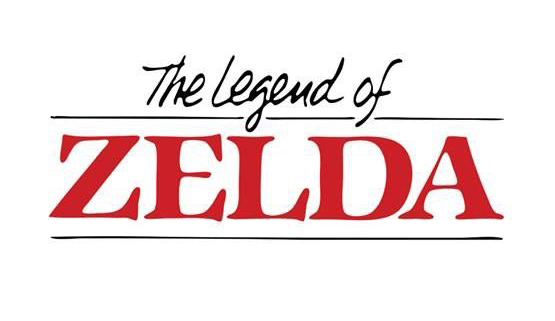
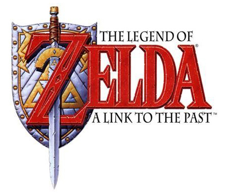
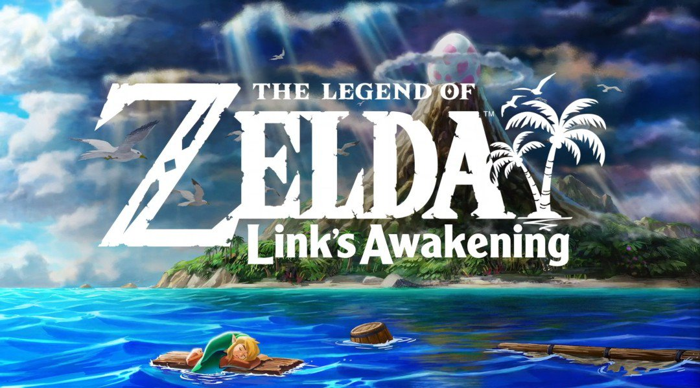
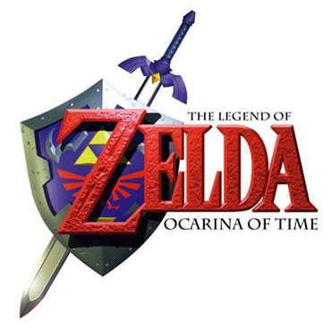
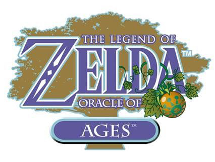

- The legend of zelda 1
- The adventure of link
- The legend of zelda a link to the past
- The legend of Zelda Link's awakening
- The legend of Zelda Link's awakening remake
- The legend of Zelda Ocarina of time
- The legend of Zelda Majora's mask
- The legend of Zelda Oracle of ages
The differentes games accrosse the series
-

The legend of Zelda 1
This is the first episode of the homonymous series.
In a fantasy world called Hyrule, Link must recover the eight fragments of the Triforce of Wisdom in order to defeat Ganon, rescue Princess Zelda and bring peace to the kingdom. He explores the world as well as several underground labyrinthine dungeons. The kingdom of Hyrule is inhabited by many monsters that Link must fight, and holds many secrets and puzzles to solve, allowing Link to discover items useful for advancing in the quest or weapons that enhance his abilities. When the player has finished the game, he or she can restart the game in a redesigned adventure called the "second quest" with modified dungeons, a new world map and tougher enemies.
-
The adventure of Link
Zelda II: The Adventure of Link. It is the second episode of The Legend of Zelda series, direct continuation of the eponymous game released one year earlier. It was ported to the NES and released in late 1988 in the United States and Europe.
A few years after Link's victory in the first opus, the kingdom of Hyrule is under attack by Ganon's henchmen who seek to get their hands on Link in order to accomplish the resurrection of their leader. Link sets out on an adventure to find the Triforce of Courage, which will allow him to awaken Princess Zelda, who has been asleep for many years under an evil spell, and prevent Ganon's return.
-

The legend of Zelda a Link to the past
The Legend of Zelda: A Link to the Past. It is the third episode of The Legend of Zelda series.
In a fantasy world called Hyrule, Link must find the three magic pendants in order to obtain the sword Excalibur, and then rescue the seven descendants of the seven sages (including Princess Zelda) and defeat Ganon, in order to recover the Triforce and bring peace to the kingdom. Link can explores the map as well as several underground labyrinthine dungeons. The kingdom of Hyrule is inhabited by many monsters that Link must fight, and contains many secrets and puzzles to solve, allowing Link to discover items useful for advancing in the quest, or weapons that enhance his abilities.
-

The legend of Zelda Link's awakening
The Legend of Zelda: Link's Awakening. It is the fourth episode of The Legend of Zelda series.
Link is sailing back to Hyrule, but a storm sinks his boat. He is stranded on Koholint Island, where he must find the Dream Fish, the only being who can help him leave the island. It turns out that the island and its inhabitants are just an illusion produced by the Dream Fish, asleep and locked in a giant egg on Mount Tamaranch. Link must wake him up to put an end to these nightmares. As always the hero must explore dungeons to find items that will allow him to advance in his quest, which consists of finding the eight musical instruments of the mermaids, which will allow him to wake up the Dream Fish. Princess Zelda, Ganon and the Triforce do not appear in this game.
-

The legend of Zelda Link's awakening remake
The Legend of Zelda: Link's Awakening remake. The game retains its top-view camera and gameplay mechanics, while undergoing a graphic overhaul, inspired by toys.
It is the same story as the original game. The only difference is the completely new art style as well as the revamp of the music.
-

The legend of Zelda Ocarina of time
The Legend of Zelda: Ocarina of time is the fifth episode of The Legend of Zelda series, five years after The Legend of Zelda: Link's Awakening, and is the first game in 3d.
Ocarina of Time tells the story of Link, a young boy living in a village lost in the forest, who travels the kingdom of Hyrule to prevent Ganondorf from obtaining the Triforce, a sacred relic divided into three: courage (Link), wisdom (Zelda) and strength (Ganondorf). The Triforce, once gathered, gives its holder superhuman powers. The main antagonist of the game, Ganondorf, wants it in order to rule the world. Therefore, Link will have to travel through time with his ocarina and find the seven sages that will allow him to lock Ganondorf in a dimensional seal.
-

The legend of Zelda Majora's mask
The Legend of Zelda: Majora's Mask. The sixth game in The Legend of Zelda franchise and the second in three dimensions after Ocarina of Time.
It features improved graphics and several gameplay changes compared to its predecessor, although a number of elements and character models are reused, a choice caused by time constraints. The Nintendo 64 version of the game requires the use of the Expansion Pak, an accessory that increases the memory capacity of the system and allows for better quality graphics. The game introduces several innovative concepts based on an ever-recurring three-day time cycle and the use of masks to transform the protagonist, Link, into different creatures. Link learns numerous melodies on the ocarina that allow him to control time streams or open passages to temples. The game features the characteristic gameplay of the Zelda series, which consists of successfully traversing temples composed of several dungeon rooms containing puzzles of varying complexity to solve and enemies to defeat.
Majora's Mask takes place in Termina, a parallel universe to Hyrule, which a giant falling moon threatens to destroy after three days, unless the player manages to avoid the impending catastrophe. The main antagonist is Skull Kid, who has stolen a powerful ancient relic, the "Mask of Majora," from an enigmatic mask seller. Skull Kid uses his newfound powers from the mask to rip the moon from its orbit and gradually bring it down to Termina, where it is to crash 72 hours later. At the request of the salesman, Link tries to go back in time several times with the help of a magic ocarina to recover the mask and prevent the apocalypse. On his journey, he collects unique masks by helping the people of Termina, which grant him a variety of abilities, including shape-shifting.
-

The legend of Zelda Oracle of ages
The Legend of Zelda: Oracle of Seasons and The Legend of Zelda: Oracle of Ages (or simply Oracle of Seasons and Oracle of Ages) are two action-adventure games. They are the seventh and eighth episodes of The Legend of Zelda series.
The player controls the character named Link, moves him in a world map in top view and fights monsters, solves puzzles and progresses his character thanks to different items he finds or obtains.
Link must find different items by exploring the map, fighting monsters and solving puzzles. In Oracle of Seasons, Link finds himself in the land of Holodrum where he sees the dark general Onox kidnap Din, the Oracle of Seasons. In Oracle of Ages, Link finds himself in Labrynna where the witch Veran possesses the spirit of Nayru, the Oracle of Ages. The main plot is revealed when the player finishes both games. The main items are the Rod of Seasons, which controls the seasons in Holodrum, and the Harp of the Ages, which allows Link to travel through time in Labrynna. Before Link can infiltrate Onox’s Castle and Veran Tower, he must obtain the eight essences of nature and the eight essences of time, which are hidden and guarded in the dungeons and protected by bosses. A code provided by one of the games, allows in the other to continue the quest and vice versa.